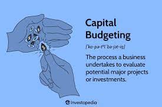

The sinking of the Titanic in 1912 is one of the most tragic maritime disasters in history. With the availability of data on the passengers and crew members, we can analyze this event and attempt to predict survival based on various factors. In this project, I utilized Python for descriptive and predictive data analysis to predict Titanic survival. This is a free Kaggle competition for Knowledge purpose.
The first step was to gather the data and load it into Python. I used the popular Pandas library to read in the CSV file containing the Titanic data. Once the data was loaded, I cleaned and preprocessed it by removing any irrelevant or duplicate data and filling in any missing values.
Next, I carried out exploratory data analysis (EDA) to gain insights into the data and identify patterns and trends. I used Matplotlib and Seaborn libraries for data visualization to create histograms, boxplots, bar plots, and other visualizations to analyze the distribution of data and relationships between variables.
After EDA, I moved on to building predictive models. I used the Scikit-learn library to build various machine learning models, including logistic regression, random forest, KNN, and support vector machines.
For this project, I used SQL to explore the SuperStore Time Series public data. The SuperStore dataset contains sales data for a fictitious company across multiple categories, sub-categories, and regions. Using SQL, I was able to query and analyze the data to gain insights into the company's sales trends and performance.
First, I loaded the SuperStore dataset into a SQL database and then used SQL queries to filter and aggregate the data. I calculated metrics such as total sales, average sales, and rolling daily and monthly sales.
This is a Coursera course Google Data Analytics Capstone Project. This project provides analysis of the previous 12-month of bike-share data.
The objective of this analysis is to provide supporting analysis to help the immaginary management design the most effective marketting strategy which is key to the future growth of the company.
I utilized R to analyse and explore the data.
The analysis reveals that casual riders use the Bike-Share mostly during the summer. The management should explore the possibility of converting these casual riders to subscription-based annual members

Firms do not often have unlimited resources to fund all the projects in their portfolio. In Capital Budgeting, firms can use the NPV rule to select the projects to include in their current budget.
In this project, I utilized the FinancialMath in R to compute the NPVs of multiple project. I created scenario and sensitivity analysis to show the impact of the key inputs.
Finally, I published the report as a live and interactive dashboard using the Shiny app.
This project evaluates the credit cards default data in the United State using Power BI visualization tool. I analysed the risk of defaulting
based on level of education, gender, age, and marital status. I created a dashboard to display the results of the analysis.
In this project, I analysed the global CO2 emmission data in Tableau.
I evaluated average CO2 per capital emission by country. I also
checked the trend of CO2 production by Region. CO2 production in the East Asia and Pacific region has been trending much higher than other regions in recent years
Space X advertises Falcon 9 rocket launches on its website with a cost of 62 million dollars; other providers cost upward of 165 million dollars each, much of the savings is because Space X can reuse the first stage. Therefore if I can determine if the first stage will land, I can infer the cost of a launch. This information can be used if an alternate company wants to bid against space X for a rocket launch. In this lab, you will create a machine learning pipeline to predict if the first stage will land. This is a Capstone project of a Coursera IBM data science course.
In this project, I utilized classification models such as logistic regression, SVM, KNN, and Decision Tree to predict the success landing of the rockets. I divided the data into 80% training and 20% test datasets. I used GridSearchCV to find the best parameters for each model and calculated the accuracy of the models versus the test data. I also utilized classification matrix to visualize the performances of the models.